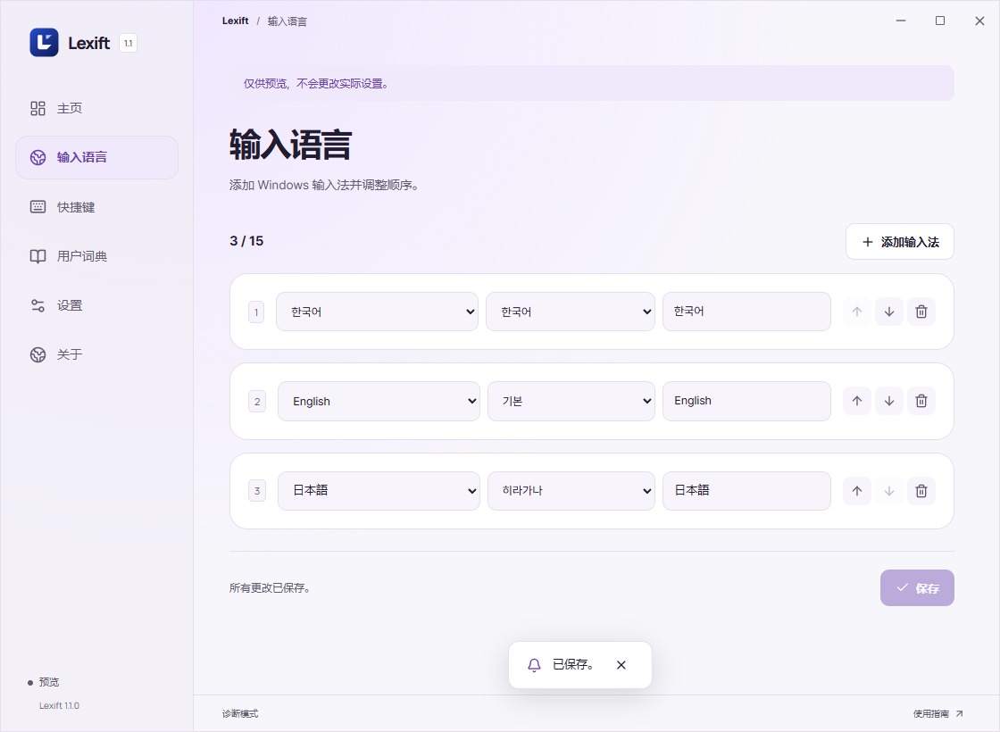
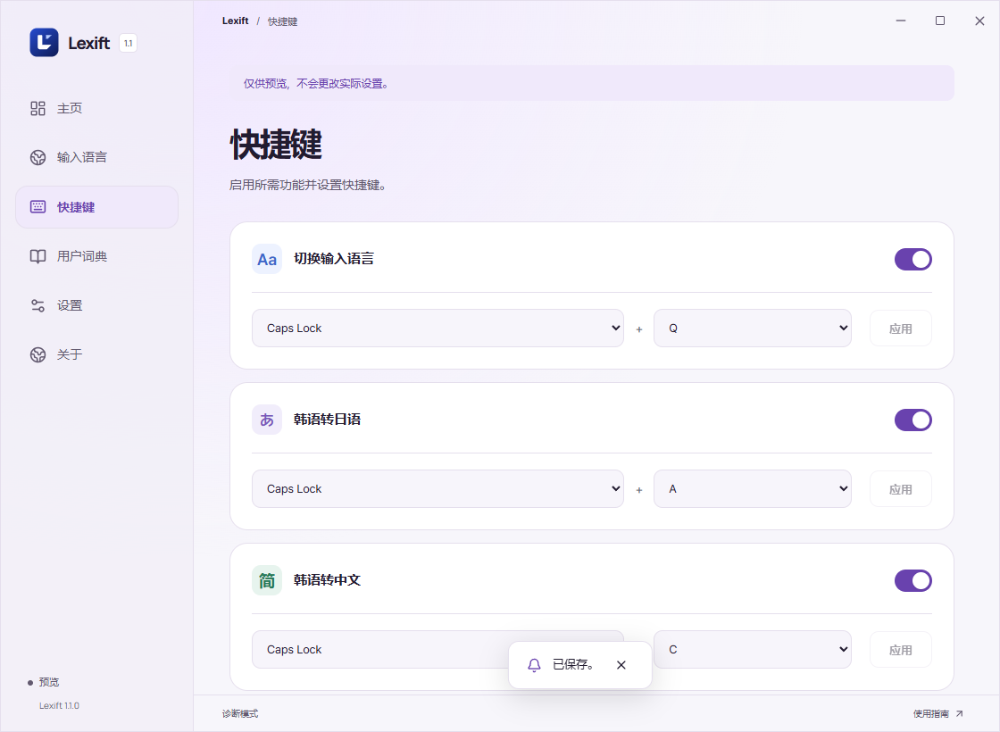
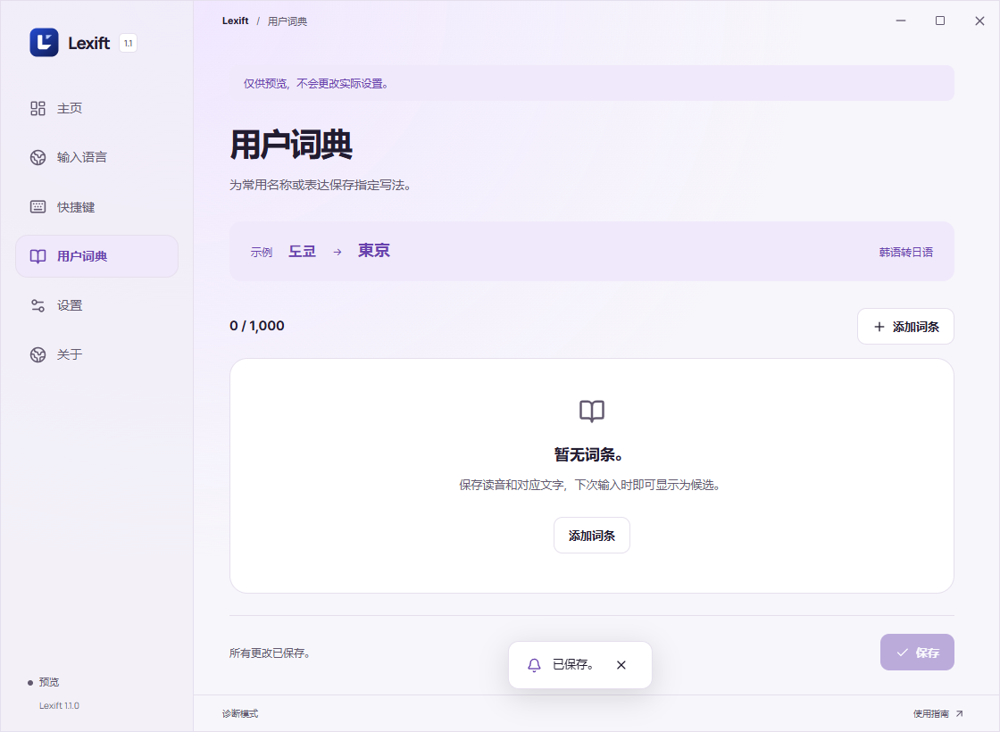

概述

安装
从系统托盘退出 Lexift，再运行安装程序。在 Windows 添加输入法后，在 Lexift 的输入语言页面中登记。


切换输入法
方向键选择、Enter 确认，或直接按编号。

日语输入
用韩文字母输入日语读音：와타시 → 私。再按一次关闭。
↑↓ 移动 / Space 或 Enter 确认 / 1–9、0 选择 / Esc 关闭。
开启转换时会切换到韩文输入。

简体中文
用韩文字母输入中文读音：니하오 → 你好。再按一次关闭。

繁体与注音
依次切换繁体 → 注音 → 关闭。중궈 → 中國 / 니하오 → ㄋㄧ ㄏㄠ。注音不标声调。


拼音声调
在快捷键页面开启拼音声调。在英文输入状态下输入 ke，再按 Caps + 3，即可得到 kě。
1–4：设置声调 / 0：清除声调。数字小键盘也可使用，不受 Num Lock 影响。候选窗口打开时，数字键优先选择候选。


设置

自定义词典
添加候选中没有的词。填写关键词、替换文本和语言后保存，例如：스미네 / 澄音 / 韩日转换。点每行右侧按钮删除。


问题排查
快捷键无反应
检查系统托盘中是否有 Lexift。在设置中启用对应功能并点击“应用”。若与其他程序的快捷键冲突，请更换按键。
切换列表中没有所需语言
在 Windows 设置中安装相应语言和输入法，再添加到 Lexift 的“输入法槽位”。
输入韩文后不显示候选词
开启转换，并将韩语输入法切至韩文模式。日语转换需要 Microsoft 日语输入法。新安装输入法后，重新启动 Lexift。
日语转换引擎反复停止
从系统托盘退出 Lexift，再运行安装程序。若错误仍然存在，请附上退出代码。
找不到所需词语
姓名、专有名词可添加到用户词典。日语长音可用连字符 (-) 输入，例如：코-죠- → こうじょう。
Caps + Q 中方向键或 Esc 无效
从系统托盘退出 Lexift，再运行安装程序。若错误仍然存在，请附上退出代码。
拼音无法添加声调
在设置中启用“拼音声调”。切至英文输入，输入 ke 后按 Caps + 3。先关闭候选窗口，并将光标放在要加声调的音节后。
仅在某个程序中无法输入
重新点击输入框，并在记事本中对比测试。若目标程序以管理员身份运行，先退出 Lexift，再以管理员身份重新运行。不支持密码等安全输入框。
反馈问题时请注明程序名称、Windows 版本及复现步骤。
GitHub Issues ↗